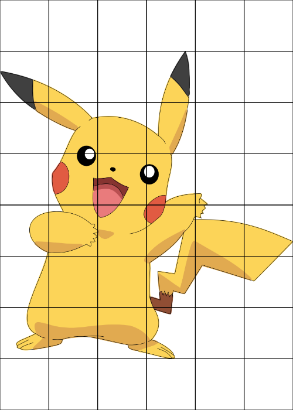

For my intro to art class we need to bring in a 5“x7” image with a grid overlayed onto it. I certainly didn’t want it by hand so I turned to the Haskell Diagrams DSL.
This took me ~10 minutes to get working. I first went with a vbar approach, but didn’t like the way it ended up. While I could have spent time fiddling with the line params, I decided to try to actually build the grid out of squares :p. Here’s the result:
{-# LANGUAGE NoMonomorphismRestriction #-}
import Diagrams.Prelude
import Diagrams.Backend.Cairo.CmdLine
import Diagrams.TwoD.Image
world :: FilePath -> Diagram B R2
world path = grid <> picture
where squares = (hcat $ replicate 5 (square 1))
grid = (vcat $ replicate 7 squares) # centerXY
picture = image path 5 7 # centerXY
main = mainWith $ worldThe usage is:
$ ./grid_gen pika.png -w 500 -h 700 -o pika_grid.pnggenerating something like
 1
Over all it actually spent me more time figuring out how to get zenburn syntax highlighting in this post, than writing this haskell program. Way to go diagrams :p
Ended up going with a different template pikachu. 2